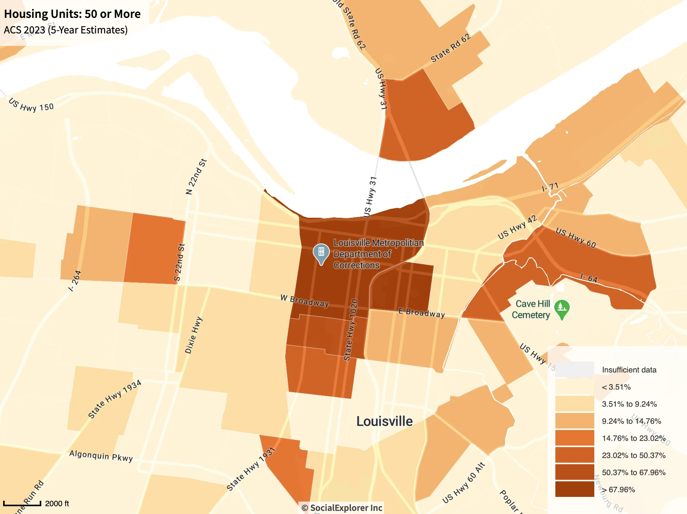
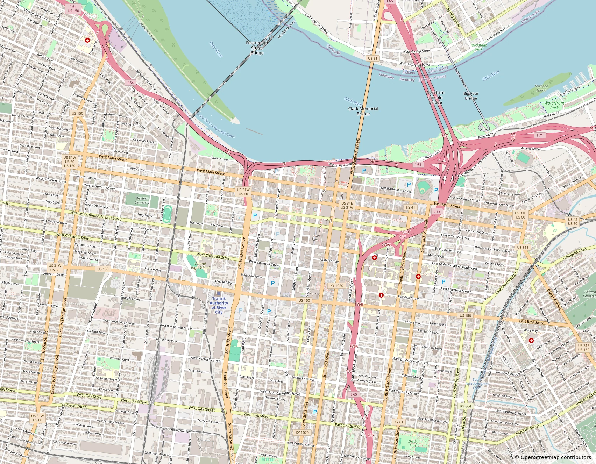

Downtown Derby
Two ways of mapping downtown Louisville, Kentucky.

One map shows areas with 50 or more housing units. The other focuses on streets and the built environment using OpenStreetMap data.
I made them to explore how the same part of a city changes when the scale and subject change.
More maps
